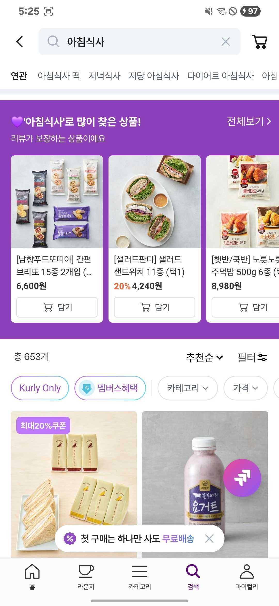
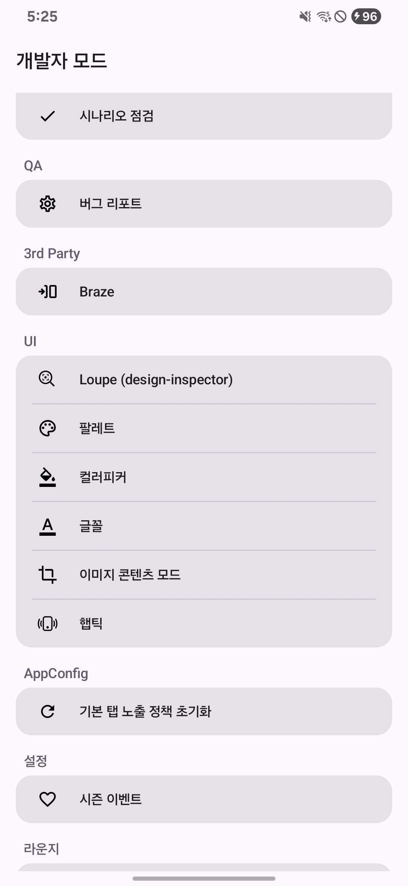
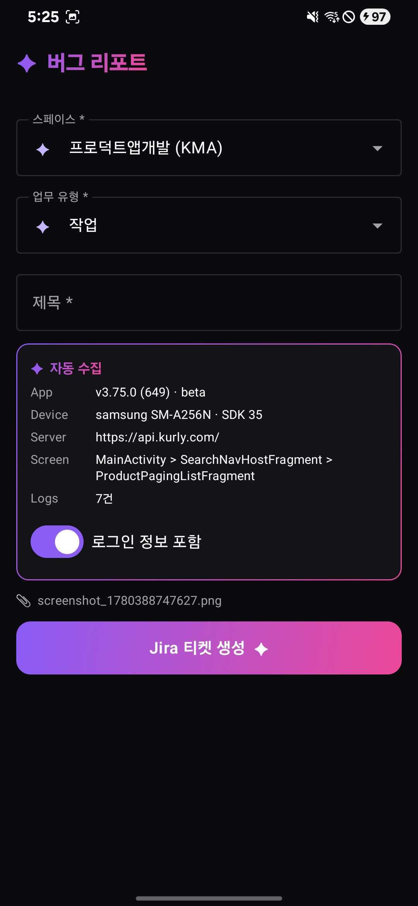
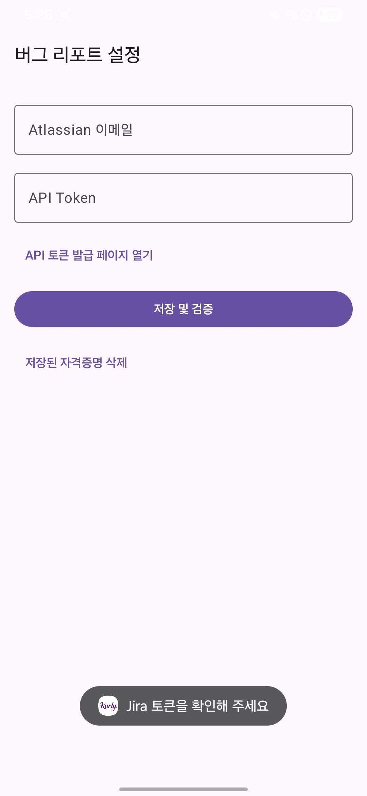

버그 신고는 왜 미뤄지는가
QA를 돌리다 이상한 화면을 만났다고 하자. 제대로 신고하려면 손이 꽤 많이 간다. 스크린샷을 찍고, 어느 기기에서 어떤 빌드로 재현됐는지 적고, 로그를 뽑아 붙이고, Jira를 열어 프로젝트와 이슈 타입을 고르고, 제목과 본문을 채운다. 버그 하나를 기록하는 데 드는 이 다섯 단계가, 역설적이게도 신고 자체를 미루게 만든다. "나중에 정리해서 올려야지" 하고 넘긴 버그는 보통 영영 올라가지 않는다.
비용이 큰 건 버그를 발견하는 일이 아니라 버그를 기록하는 일이다. 그렇다면 기록 과정을 버튼 하나로 접을 수 있을까? 화면에 떠 있는 작은 플로팅 버튼을 한 번 탭하면, 지금 보고 있는 화면의 스크린샷과 환경 정보, 최근 로그가 자동으로 모여 Jira 티켓이 되는 것이다.
이 글은 그 도구 — 디버그 빌드 전용 버그 리포트 파이프라인 — 를 어떻게 설계했는지에 대한 기록이다. 단순해 보이는 "탭 한 번"의 뒤에는, Release 빌드에 새지 않게 막는 가드, 큰 객체를 액티비티 사이로 안전하게 넘기는 방법, 스크린샷에서 자기 자신을 지우는 트릭, 토큰을 로그에 노출하지 않는 보안, 그리고 "티켓은 만들어졌는데 첨부만 실패한" 어중간한 상태를 다루는 처리가 들어 있다. 하나씩 살펴본다.
KMA(프로덕트앱개발) 또는 KQA(커머스SQE) 프로젝트에 티켓을 생성한다. Release/Store 빌드에는 코드가 포함되지만 진입점이 이중으로 막혀 사용자에게는 어떤 영향도 없다.
한 번의 탭에서 티켓까지 — 7단계 파이프라인
전체 흐름을 먼저 조망하자. 플로팅 버튼 탭에서 티켓 생성·첨부 업로드까지는 직렬로 흐른다. 토큰 등록 분기는 최초 1회만 발생하고, 한 번 등록되면 메인 파이프라인은 끊김 없이 이어진다.

Activity decorView에 부착된 56dp 원형 버튼. 드래그가 아니라 탭일 때만 performClick()이 호출된다.
decorView를 ARGB_8888 비트맵으로 그려 PNG로 저장. 캡처 직전 자기 자신(플로팅 버튼)을 숨긴다.
앱 환경 · 디바이스 · 리포터 · 서버 baseUrl · 현재 화면명 + #KL_UseCase prefix 로그 최근 100건.
큰 객체를 Intent로 넘기지 않고 Singleton 저장소에 UUID 키로 담은 뒤, sessionId만 Intent로 전달한다.
Compose 미리보기 화면. 스페이스(KMA/KQA)를 바꾸면 이슈 타입은 새 스페이스의 기본값으로 리셋된다.
Draft + Metadata를 ADF JSON으로 빌드 → POST /rest/api/3/issue. 토큰이 없거나 401/403이면 설정 화면으로 분기.
이슈 생성 성공 콜백 안에서 스크린샷 + logs.txt를 multipart로 업로드. 성공 시 토스트 후 화면 종료.
여기서 주목할 점은 7단계가 두 종류로 나뉜다는 것이다. 2·3·4·6·7은 시스템이 자동으로 처리하고, 1·5만 사용자의 손을 빌린다. "탭 한 번"이라는 표현이 과장이 아닌 이유다. 사용자가 실제로 하는 일은 버튼을 누르고 제목을 적는 것뿐이다.
이제 이 흐름을 떠받치는 다섯 가지 설계 결정을 하나씩 들여다본다. 각 결정은 "어떤 문제가 있었고, 무엇을 선택했으며, 코드로 어떻게 풀었는지"의 순서로 정리했다.
이중 가드로 Release 빌드 격리
가장 먼저 못 박아야 할 것은 안전이다. 이 기능은 라이브러리 모듈(:debug-helper)에 들어가므로 코드 자체는 Release/Store AAR에도 포함된다. 따라서 "코드가 들어가더라도 절대 동작하지 않는다"는 보장을 진입점에서 만들어야 한다. 한 겹으로는 부족하다고 봤다. 빌드 타입으로 한 번, 런타임 토글로 한 번, 두 겹으로 막았다.
override fun onActivityCreated(activity: Activity) {
// ① 빌드 가드 — debuggable 플래그가 없으면 즉시 반환
if (!isDebugBuild(activity)) return
// ② 런타임 토글 — "개발자 모드 > QA > 버그 리포트" (기존 디버깅 뷰 토글과 독립)
if (!DebuggingModuleConfig.useBugReport) return
// ③ 버그 리포트 자체 화면(미리보기·설정)에는 버튼이 필요 없다
if (activity.javaClass.name.startsWith("com.kurly.android.debugging.bugreport")) return
show(activity)
}
private fun isDebugBuild(activity: Activity): Boolean =
(activity.applicationInfo.flags and ApplicationInfo.FLAG_DEBUGGABLE) != 0첫 번째 가드 FLAG_DEBUGGABLE는 빌드 시스템이 매니페스트에 박는 플래그를 직접 읽는다. BuildConfig.DEBUG 상수가 아니라 런타임 ApplicationInfo를 본다는 점이 의도적이다. 라이브러리 모듈의 BuildConfig는 그 모듈 자신의 빌드 타입을 따르므로, 앱이 실제로 어떤 빌드로 패키징됐는지를 신뢰성 있게 알려면 앱의 플래그를 읽어야 한다.
두 번째 가드 useBugReport 토글은 기존 "디버깅 뷰 사용" 토글과 독립적으로 동작한다. 디버깅 오버레이는 끄고 버그 리포트만 켜는 조합이 가능해야 했기 때문이다. 세 번째 가드는 안전이라기보다 UX다 — 미리보기·설정 화면 위에까지 플로팅 버튼이 떠 있을 이유가 없으니, 자기 패키지의 액티비티는 건너뛴다.
빌드 플래그(컴파일 타임 사실)와 런타임 토글(사용자 의도)을 AND로 묶어, Release 빌드에서는 코드가 존재해도 진입점이 열리지 않도록 했다.
TransactionTooLarge를 피한 인메모리 핸드오프
스크린샷과 메타데이터를 수집한 다음, 이걸 미리보기 액티비티로 넘겨야 한다. 안드로이드에서 액티비티 간 데이터 전달의 정석은 Intent extra다. 하지만 여기엔 함정이 있다. Intent로 전달되는 데이터는 Binder 트랜잭션 버퍼를 거치는데, 이 버퍼는 프로세스당 약 1MB로 공유된다. 풀 해상도 스크린샷 비트맵을 직렬화해 넣으면 TransactionTooLargeException으로 앱이 죽기 십상이다.
그래서 객체 자체는 메모리에 두고, 가벼운 키만 Intent로 넘기는 핸드오프 패턴을 택했다. ConcurrentHashMap을 가진 Singleton 세션 저장소가 그 역할을 한다.
@Singleton
internal class BugReportSession @Inject constructor() {
private val store = ConcurrentHashMap<String, BugReportPayload>()
fun put(screenshot: Screenshot?, metadata: BugReportMetadata): String {
val id = UUID.randomUUID().toString()
store[id] = BugReportPayload(screenshot = screenshot, metadata = metadata)
return id // Intent 로는 이 String 만 넘어간다
}
fun peek(id: String): BugReportPayload? = store[id]
fun consume(id: String): BugReportPayload? = store.remove(id)
}오버레이 컨트롤러는 캡처가 끝나면 session.put(...)으로 페이로드를 저장하고, 돌려받은 sessionId 문자열만 Intent에 실어 미리보기를 띄운다.
private fun onClick(activity: Activity) {
val screenshot = try {
CaptureArtifact.Screenshot(capturer.capture(activity, outDir))
} catch (e: Exception) { null } // 캡처 실패해도 메타데이터만으로 진행
val metadata = collector.collect()
val sessionId = session.put(screenshot, metadata)
activity.startActivity(BugReportPreviewActivity.newIntent(activity, sessionId))
}이 패턴엔 한 가지 책임이 따라온다 — 메모리에 남긴 페이로드를 언젠가 반드시 비워야 한다. 스크린샷 비트맵을 들고 있는 객체가 누수되면 그대로 메모리 압박이 된다. 미리보기 화면이 정상 제출 없이 닫히는 경우(뒤로 가기 등)까지 포함해서 정리되도록, ViewModel의 onCleared()에서 세션을 소비한다.
override fun onCleared() {
// 미제출 종료(뒤로가기 등)를 포함한 화면 종료 시 인메모리 세션 정리
session.consume(sessionId)
}peek(읽기만)과 consume(읽고 제거)를 분리한 것도 같은 맥락이다. 화면이 살아 있는 동안은 peek으로 여러 번 읽고, 화면이 끝나거나 제출이 완료되면 consume/clear로 확실히 제거한다.
스크린샷에서 자기 자신 지우기
스크린샷 캡처에는 재미있는 딜레마가 있다. 화면을 찍으려면 화면 위에 떠 있어야 하는 플로팅 버튼이, 정작 찍히는 순간에는 화면에 없어야 한다. 버그 리포트에 우리 도구의 버튼이 함께 찍히면 모양도 빠지고, 무엇보다 실제 화면을 가린다.
해법은 단순하다. 캡처 직전에 버튼을 INVISIBLE로 바꾸고, 캡처가 끝나면 원래 상태로 되돌린다. 중요한 건 이 복원이 예외가 나도 반드시 실행돼야 한다는 점이다. 그래서 try/finally로 감쌌다.
try {
// INVISIBLE 이면 layout 은 유지되고 그리기에서만 빠진다. GONE 은 layout 흔들림 유발.
bugReportButton?.visibility = View.INVISIBLE
val bitmap = try {
view.drawToBitmap(Bitmap.Config.ARGB_8888)
} catch (e: IllegalArgumentException) {
// 0×0 등으로 drawToBitmap 이 실패하면 Canvas 수동 그리기로 fallback
Bitmap.createBitmap(
view.width.coerceAtLeast(1),
view.height.coerceAtLeast(1),
Bitmap.Config.ARGB_8888,
).also { bmp -> Canvas(bmp).also { c -> view.draw(c) } }
}
FileOutputStream(outFile).use { it -> bitmap.compress(PNG, 100, it) }
} finally {
originalVisibility?.let { bugReportButton.visibility = it } // 항상 복원
}두 가지 디테일을 짚어둔다. 첫째, GONE이 아니라 INVISIBLE을 쓴 이유다. GONE은 뷰를 레이아웃에서 제외해 주변 뷰가 재배치되는데, 그 흔들림이 캡처에 잡힐 수 있다. INVISIBLE은 자리를 유지한 채 그리기에서만 빠지므로 화면이 흔들리지 않는다. 둘째, drawToBitmap이 실패할 때를 대비한 Canvas 수동 그리기 fallback이다. 뷰 크기가 0이거나 하는 가장자리 상황에서도 캡처가 끊기지 않도록 했다.
탭과 드래그를 구분하는 임계값
플로팅 버튼은 화면 어디든 옮길 수 있어야 편하다. 그러면 "버튼을 옮기려는 드래그"와 "신고하려는 탭"을 구분해야 한다. 손가락은 가만히 누른다고 생각해도 미세하게 움직이므로, 일정 거리 안의 움직임은 탭으로 봐줘야 한다. 그 기준값을 직접 정하지 않고 시스템이 제공하는 scaledTouchSlop을 썼다.
// 고정 px 는 고밀도 화면에서 물리적 거리가 작아져 미세한 흔들림도 드래그로 오인한다.
// 밀도 보정된 시스템 touchSlop 을 사용한다.
val touchSlop = ViewConfiguration.get(view.context).scaledTouchSlop
// ... ACTION_UP 에서
val isTap = abs(event.rawX - downX) < touchSlop && abs(event.rawY - downY) < touchSlop
if (isTap) v.performClick()scaledTouchSlop은 화면 밀도에 맞춰 보정된 "이 정도 움직임은 같은 지점으로 본다"는 시스템 표준값이다. 직접 숫자를 박았다면 고밀도 화면에서는 너무 민감해 탭이 자꾸 드래그로 오인됐을 것이다.
Jira에 직접 꽂기 — ADF·Basic Auth·토큰 보안
이제 모은 정보를 실제 Jira 티켓으로 만든다. 별도 백엔드 서버를 두지 않고 클라이언트가 Jira Cloud REST API v3를 직접 호출한다. 사용자 본인의 Atlassian API 토큰으로 인증하므로, 생성된 티켓의 작성자도 본인이 된다.
본문은 ADF로 — 평문이 아니다
처음 마주친 벽은 본문 포맷이었다. Jira REST API v3는 위키 마크업 문자열을 description으로 받지 않는다. 대신 ADF(Atlassian Document Format) — 리치 텍스트를 표현하는 JSON 구조 — 를 요구한다.[1] ADF 문서는 최상위에 version, type: "doc", 그리고 노드 배열인 content 세 가지를 가진다.[2] 그래서 수집한 메타데이터를 헤딩과 문단 노드로 조립한다.
fun build(draft: BugReportDraft, metadata: BugReportMetadata): JiraIssuePayload {
val adf = JSONObject().apply {
put("type", "doc")
put("version", 1)
put("content", contentArray(draft, metadata)) // "발생환경" / "사전조건" 헤딩 + 문단
}
return JiraIssuePayload(
summary = draft.title,
descriptionAdf = adf,
projectKey = draft.space.projectKey, // KMA | KQA
issueTypeId = draft.issueType.id,
)
}로그는 본문에 넣지 않고 별도 첨부 파일(logs.txt)로 분리했다. 로그 100줄을 ADF 문단으로 변환하면 본문이 비대해지고 가독성도 떨어진다. 본문에는 환경·사전조건 같은 핵심 맥락만 담고, 양이 많은 로그는 파일로 붙이는 편이 읽는 사람에게도 낫다.
인증은 Basic Auth, 생성은 POST 한 방
인증은 email:apiToken을 Base64로 인코딩한 Basic Auth 헤더를 쓴다. 이슈 생성은 조립한 fields 객체를 POST /rest/api/3/issue로 보내는 것으로 끝난다. 응답 코드에 따라 명확한 예외로 분기해, 호출하는 쪽이 상황을 구분할 수 있게 했다.
val body = JSONObject().apply {
put("fields", JSONObject().apply {
put("project", JSONObject().put("key", payload.projectKey))
put("issuetype", JSONObject().put("id", payload.issueTypeId))
put("summary", payload.summary)
put("description", payload.descriptionAdf)
// reporter/assignee 를 본인 accountId 로 — 누락 시(구버전 토큰) 생략
})
}.toString()
client.newCall(request).execute().use { response ->
when (response.code) {
in 200..299 -> JiraIssueRef(key = key, url = "$baseUrl/browse/$key")
401, 403 -> throw JiraException.Auth(responseBody)
400 -> throw JiraException.Validation(responseBody)
in 500..599 -> throw JiraException.Server(response.code)
else -> throw JiraException.Unknown(response.code, responseBody)
}
}401/403을 Auth로, 400을 Validation으로 따로 던지는 게 핵심이다. 뒤에서 보겠지만 ViewModel은 Auth 예외를 받으면 "토큰을 다시 등록하라"는 신호로 해석해 설정 화면으로 보낸다. 예외 타입이 곧 다음 행동을 결정한다.
토큰을 로그에 흘리지 않기
API를 직접 호출하면 디버깅을 위해 요청·응답을 로깅하고 싶어진다. 그런데 그 로그에 Authorization 헤더가 그대로 찍히면 API 토큰이 logcat에 노출된다. 그래서 로깅 인터셉터가 Authorization 값만 가리도록 했다.
request.headers.forEach { (name, value) ->
val rendered = if (name.equals("Authorization", ignoreCase = true)) "███" else value
sink(" $name: $rendered")
}보안은 한 곳 더 있다. 첨부할 로그는 AppLogger가 남긴 전체 로그가 아니라 #KL_UseCase prefix로 시작하는 라인만 필터링한다. 도메인 유스케이스 흐름만 남기고 그 외 로그에 섞여들 수 있는 PII 노출 위험을 줄이려는 의도다.
recentLogs = logSource()
.filter { it.startsWith("#KL_UseCase") } // 유스케이스 로그만
.takeLast(100) // 최근 100건으로 cap
.asReversed() // 최신 → 오래된 순신규 클래스 30개의 역할 그룹과 7단계 파이프라인을 한 페이지 다이어그램으로 정리한 시각화 문서를 함께 제공합니다.
→ 클래스 관계 & 플로우 시각화 보기
부분 성공을 다루는 첨부 재시도
마지막 설계 결정은 가장 미묘한 상태에 관한 것이다. 제출은 사실 두 번의 네트워크 호출이다 — 이슈를 만들고(createIssue), 그 이슈에 파일을 붙인다(addAttachment). 그런데 이슈 생성은 성공했는데 첨부 업로드만 실패하면 어떻게 될까? 티켓은 이미 Jira에 만들어졌다. 여기서 전체를 실패로 처리하면 사용자는 "실패"를 보고 다시 누를 테고, 그러면 똑같은 티켓이 중복 생성된다.
그래서 이슈 생성 성공을 되돌릴 수 없는 사실로 받아들이고, 첨부 실패는 부분 성공으로 따로 다룬다. 성공 콜백 안에서 첨부를 올리고, 실패한 첨부만 골라 보관한다.
service.createIssue(payload)
.onSuccess { ref ->
val failed = uploadAttachments(ref.key, attachments)
if (failed.isEmpty()) {
session.clear(sessionId)
_events.send(SubmitSucceeded(ref.key, ref.url)) // 완전 성공
} else {
failedAttachments = failed // 실패분만 보관
_uiState.update { it.copy(partialBanner = PartialBanner(ref.key, ref.url, ...)) }
}
}
.onFailure { error ->
when (error) {
is JiraException.Auth, is JiraException.NoCredentials ->
_events.send(RedirectToSettings) // 토큰 문제 → 설정으로
else -> _events.send(SubmitFailed(error.message ?: "제출 실패"))
}
}첨부가 일부 실패하면 화면에 배너(PartialBanner)가 뜨고, 재시도 버튼은 실패한 첨부만 다시 올린다. 이미 올라간 스크린샷을 또 올리지 않는다.
private fun retryAttachments() {
val toRetry = failedAttachments // 직전 실패분만
if (toRetry.isEmpty()) return
viewModelScope.launch {
val failed = uploadAttachments(banner.issueKey, toRetry)
if (failed.isEmpty()) {
session.clear(sessionId)
_events.send(SubmitSucceeded(banner.issueKey, banner.issueUrl))
}
}
}onFailure 쪽도 짚어두자. Auth·NoCredentials 예외는 일반 실패와 다르게 취급해 RedirectToSettings 이벤트를 보낸다. 토큰이 없거나 만료된 것뿐이니, 사용자를 설정 화면으로 안내해 토큰을 등록·검증한 뒤 다시 제출하게 한다. 이 분기가 7단계 파이프라인에서 "최초 1회만 발생하는 토큰 등록"의 실체다.
"이슈 생성"과 "첨부 업로드"를 한 덩어리로 묶지 않고, 이슈 생성 성공을 확정 사실로 다뤄 중복 티켓을 원천 차단했다. 첨부는 실패분만 재시도한다.
한계와 트레이드오프
모든 설계엔 받아들인 비용이 있다. 이 도구가 의도적으로 포기한 것들을 분명히 적어둔다.
토큰은 평문 SharedPreferences에 저장된다. androidx-security-crypto 같은 암호화 저장소를 도입하지 않았다. 새 의존성을 들이는 비용 대비, 이 도구가 디버그 빌드 전용이고 본인 디바이스에서만 쓰인다는 전제가 그 위험을 감당할 만하다고 판단했다. 대신 README에 디바이스 분실·공유 금지를 명시하고, 토큰을 다루는 코드에도 같은 가정을 주석으로 남겼다. 만약 이 도구를 공용 QA 디바이스로 확장한다면, 이 결정은 가장 먼저 재검토해야 할 항목이다.
첨부 상한은 파일당 10MB다. Jira Cloud의 기본값을 그대로 따른다. 일반적인 스크린샷·텍스트 로그로는 닿을 일이 거의 없지만, 화면 녹화(코드에 Recording 자리만 잡혀 있다)를 붙이게 되면 부딪힐 수 있는 한계다.
별도 백엔드 없이 클라이언트가 Jira를 직접 호출한다. 서버를 두면 토큰을 중앙에서 관리하고 호출을 통제할 수 있지만, 사내 디버그 도구 하나를 위해 백엔드를 세우는 건 과한 투자다. 사용자 본인 토큰으로 본인이 호출하는 모델은, Jira API 한도도 개인 단위로 자연히 나뉘므로 이 규모에는 합리적이다.
좋은 트레이드오프는 비용을 숨기지 않는다. 평문 저장도, 직접 호출도 "지금 맥락에서 합리적인 선택"이지 "정답"이 아니다. 맥락이 바뀌면 결정도 바뀐다.
직접 켜보기
디버그 빌드를 쓰고 있다면 켜는 건 간단하다. 눈여겨볼 점은 토큰 설정이 별도의 준비 단계가 아니라는 것이다. 토큰은 첫 신고를 시도하는 순간, 등록돼 있지 않으면 자연스럽게 끼어든다.
- 1버그 리포트 ON — 개발자 모드 → QA → "버그 리포트" 토글을 켠다. 화면 우측에 Jira 플로팅 버튼이 나타난다.
- 2신고 — 버그 화면에서 버튼 탭 → 미리보기에서 스페이스(KMA/KQA)·이슈 타입 선택 → 제목 입력 → "Jira 티켓 생성". 성공하면 토스트로 이슈 키를 보여주고 화면이 닫힌다.
- 3토큰 설정(최초 1회) — 토큰이 등록돼 있지 않으면, ②에서 "Jira 티켓 생성"을 누른 순간 설정 화면으로 자동 이동한다. Atlassian 이메일 + API 토큰을 입력하면
/myself로 검증되어 본인 이름이 표시되고, 저장 후 다시 제출하면 티켓이 만들어진다. 한 번 등록하면 이후엔 이 단계를 거치지 않는다.

개발자 모드 → QA → 토글

스페이스·이슈 타입·제목 입력

토큰 없으면 자동 이동·검증
버그를 발견하고 신고하기까지의 거리를 좁히는 것 — 그게 이 도구가 한 일의 전부다. 스크린샷을 찍고 기기 정보를 받아적고 로그를 뽑던 다섯 단계가 "버튼 탭 + 제목 입력"으로 줄었다. 신고가 쉬워지면 더 많은 버그가 기록되고, 기록된 버그는 고쳐질 기회를 얻는다.
한 번 만들어두니 다른 욕심도 생긴다. 화면 녹화 첨부(Recording 자리는 이미 비워뒀다), 직전 네트워크 응답 캡처, 재현 단계 자동 기록 같은 것들. 같은 파이프라인 위에 얹으면 되는 확장들이다. 컨텍스트를 모아 한 번에 꽂는다는 골격은 그대로 두고 말이다.